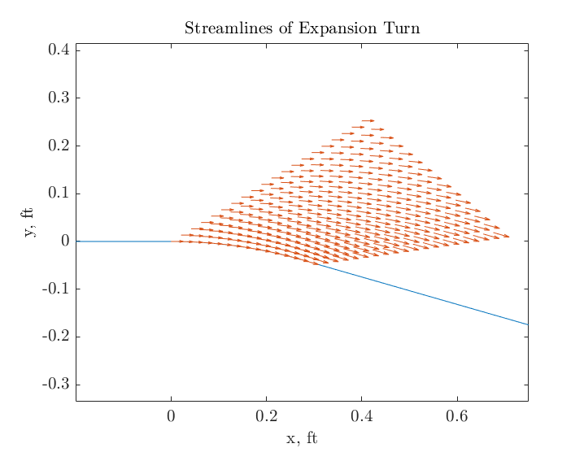
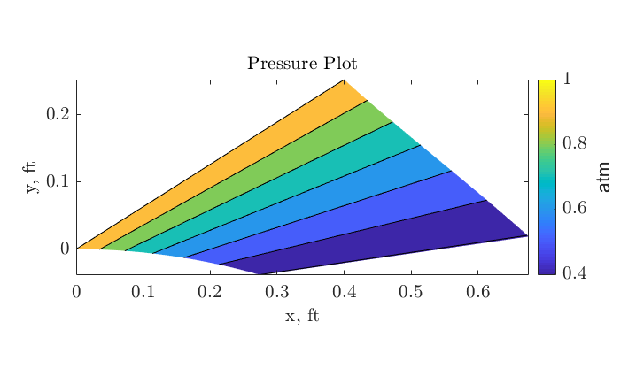
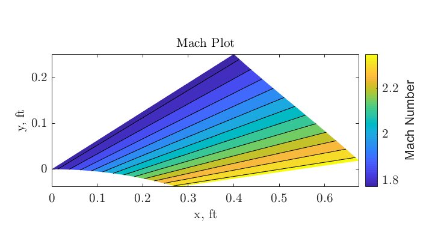
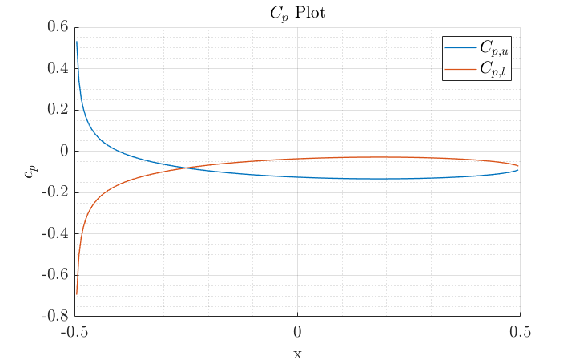

Contents
Problem 1
close all
clear;clc
M1 = 1.775;
p1 = 1;
gamma = 1.4;
p0 = (1+(gamma-1)/2*M1^2)^(gamma/(gamma-1));
lb = -0.2;
rb = 0.75;
xw = linspace(lb,rb,1000)';
y = @(x) 0 .* (x<=0) ...
+ (cos(asin(x))-1) .* (x>0 & asin(x)<=deg2rad(16)) ...
+ (1/cosd(16)-1-tand(16).*x) .* (asin(x)>deg2rad(16));
yw = y(xw);
figure(1)
plot(xw,yw);
axis equal
num_fan = 15;
num_pts = 20;
num_streams = 10;
stream_height = 0.3;
X = nan(num_fan,num_pts);
Y = nan(num_fan,num_pts);
U = nan(num_fan,num_pts);
V = nan(num_fan,num_pts);
P = nan(num_fan,num_pts);
M = nan(num_fan,num_pts);
xs = linspace(0,sind(16),num_fan);
ys = y(xs);
ts = -asin(xs);
Ms = nan(size(ts));
syms mm positive
for i = 1:length(ts)
eqn = -ts(i) == PM(mm,gamma) - PM(M1,gamma);
Ms(i) = abs(double(vpasolve(eqn,mm)));
xx = linspace(xs(i),xs(i)+0.4,num_pts);
yy = tan(ts(i)+1/Ms(i)).*(xx-xs(i))+ys(i);
X(i,:) = xx;
Y(i,:) = yy;
U(i,:) = Ms(i) * cos(ts(i));
V(i,:) = Ms(i) * sin(ts(i));
P(i,:) = p0 * (1+(gamma-1)/2*Ms(i)^2)^(-gamma/(gamma-1));
M(i,:) = Ms(i);
end
hold on
quiver(X,Y,U,V)
hold off
xlabel('x, ft')
ylabel('y, ft')
title('Streamlines of Expansion Turn')
latexify(19,15)
figure(2)
contourf(X,Y,P)
axis equal
xlabel('x, ft')
ylabel('y, ft')
title('Pressure Plot')
c = colorbar;
c.Label.String = 'atm';
latexify(19,11)
figure(3)
contourf(X,Y,M)
axis equal
xlabel('x, ft')
ylabel('y, ft')
title('Mach Plot')
c = colorbar;
c.Label.String = 'Mach Number';
latexify(19,11)
  
Problem 2
close all
clear;clc
alpha = deg2rad(4);
tc = 0.05;
x = linspace(-0.5,0.5,200);
M = 2;
[cpu,cpl] = cp_Joukowski(x,alpha,tc,M);
figure(4)
hold on
plot(x,cpu,'LineWidth',1)
plot(x,cpl,'LineWidth',1)
hold off
grid(gca,'minor')
grid on
xlabel('x')
ylabel('$c_p$')
title('$C_p$ Plot')
legend('$C_{p,u}$','$C_{p,l}$')
latexify(19,12)
Function Definitions
function [cpu,cpl] = cp_Joukowski(x,alpha,tc,M)
c = max(x)-min(x);
t = c * tc;
theta = c .* ( (77.*t.*x.*((2.*x)./c - 1))./(50.*c.^3.*(1 - (4.*x.^2)./c.^2).^(1./2)) - (77.*t.*(1 - (4.*x.^2)./c.^2).^(1./2))./(100.*c.^2));
theta_u = theta - alpha;
theta_l = -theta - alpha;
cpu = 2.*theta_u / sqrt(M^2-1);
cpl = 2.*theta_l / sqrt(M^2-1);
end
